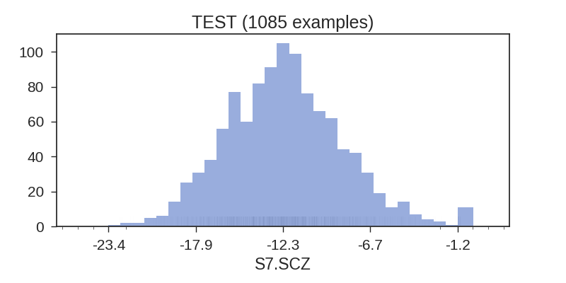

SPLIT = test
train
valid
test
NAME = S7.SCZ
S7.SCZ
S7.SCZ_x_Mood_disorders
S7.SCZ_x_Other_specified_nonpsychotic_andor_transient_mental_disorders
S7.SCZ_x_Schizophrenia_and_other_psychotic_disorders
total_tokens
unique_tokens
SRCFILE: y_hist-name=S7.SCZ-split=test.png
